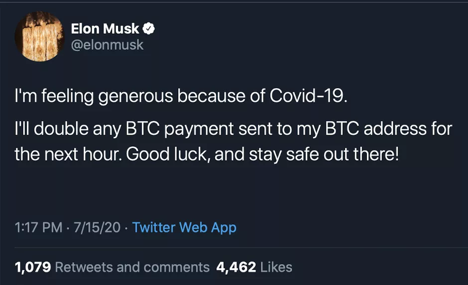
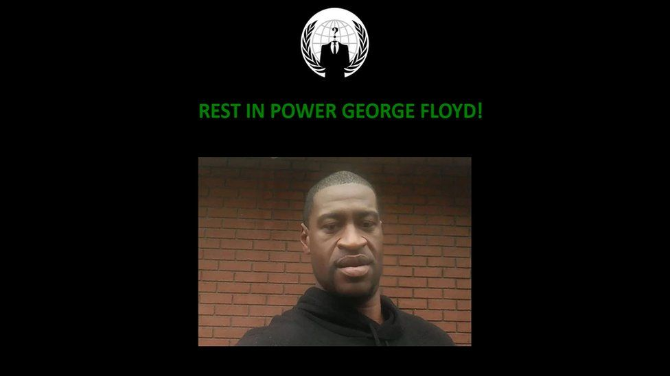

Des évènements
Juillet 2020: L'arnaque de bitcoin sur Twitter
Un pirate a utilisé l'ingénierie sociale pour avoir accès à des outils d'administration de Twitter
Il est allé dans les comptes de plusieurs célébrités, notamment des présidents de compagnie
Le pirate a volé environ en valeur de bitcoin (valeur change en temps réel)
(8)

Mai 2020: 3 jours après le meutre de George Floyd
Le groupe de hackers Anonymous a fait des actions ayant rapport avec le meutre de George Floyd
Ils ont lancé une attaque de déni de service (DDoS) au site web du département policier de Minneapolis
Ce groupe a ensuite divulgé des vidéos démontrant la brutalité des policiers
Ils ont piraté une partie du site de l'ONU et l'ont dédié à George Floyd, en mettant leur logo au dessus de son image
(9)
